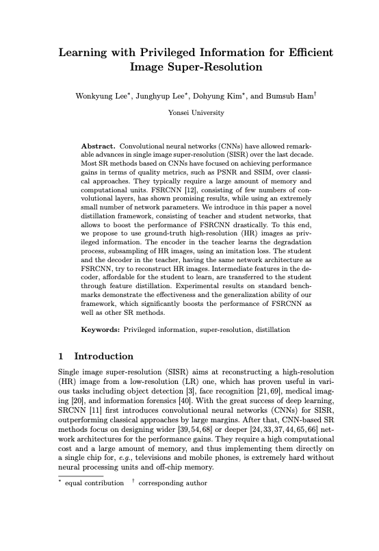

Convolutional neural networks (CNNs) have allowed remarkable advances in single image super-resolution (SISR) over the last decade. Most SR methods based on CNNs have focused on achieving performance gains in terms of quality metrics, such as PSNR and SSIM, over classical approaches. They typically require a large amount of memory and computational units. FSRCNN, consisting of few numbers of convolutional layers, has shown promising results, while using an extremely small number of network parameters. We introduce in this paper a novel distillation framework, consisting of teacher and student networks, that allows to boost the performance of FSRCNN drastically. To this end, we propose to use ground-truth high-resolution (HR) images as privileged information. The encoder in the teacher learns the degradation process, subsampling of HR images, using an imitation loss. The student and the decoder in the teacher, having the same network architecture as FSRCNN, try to reconstruct HR images. Intermediate features in the decoder, affordable for the student to learn, are transferred to the student through feature distillation. Experimental results on standard benchmarks demonstrate the effectiveness and the generalization ability of our framework, which significantly boosts the performance of FSRCNN as well as other SR methods.
|  |
W. Lee, J. Lee, D. Kim, B. Ham Learning with Privileged Information for Efficient Image Super-Resolution In Proceedings of European Conference on Computer Vision (ECCV) , 2020 [Paper on arXiv] |
@InProceedings{Lee20,
author = "W. Lee, J. Lee, D. Kim, B. Ham",
title = "Learning with Privileged Information for Efficient Image Super-Resolution",
booktitle = "ECCV",
year = "2020",
}
This research was supported by the Samsung Research Funding & Incubation Center for Future Technology (SRFC-IT1802-06).